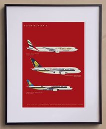

Planes above me
Every flight over you right now, nearest first.
| Flight | Airline | Aircraft | Registration | Route | Altitude | Distance |
|---|
What plane is flying over me?
This page lists every aircraft our antennas can hear within the radius you pick, nearest first, and refreshes every 20 seconds. On its own it guesses your city from your connection. Share your exact location to see the planes over your street.
How to identify a plane overhead
- Note roughly where it is in the sky and which way it is heading.
- Open this page and choose Use my exact location.
- Match height and distance. An airliner at 35,000 ft can be 10 miles away and still look overhead. One at 3,000 ft is probably landing or taking off nearby.
- Tap the flight number for its route and recent flights, or the registration for that aircraft's own history.
Why a plane might be missing
- Our antennas don't cover every sky yet. Partner networks fill some of the gaps, credited under the table.
- Some aircraft, many military ones among them, don't broadcast a position.
- A plane that only just came into range shows up on the next refresh, within 20 seconds.
Where the positions come from
Airliners broadcast their identity, position and altitude by radio (ADS-B, on 1090 MHz) several times a second. Receivers run by the FlightPortrait community pick those signals up, and this page asks them which aircraft are near you. A Raspberry Pi and a small USB radio are enough to add an antenna where you live and fill in your own sky.
Questions
Is it free?
Yes. No account and no app, in any browser.
Do you keep my location?
No. It stays in this page and is used only to ask for the aircraft around you.
How far does it look?
10, 25 or 50 miles around you, your choice. The list starts with the nearest aircraft.
Can I have this on my wall?
Yes. FlightPortrait draws the planes over your home as a portrait on a 13.3-inch color e-ink frame. See the frame.

The planes over your home, drawn and framed.
See the frame